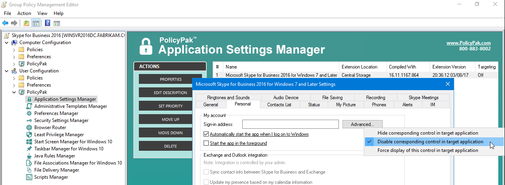
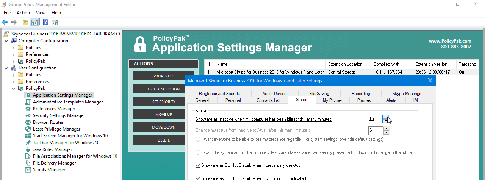
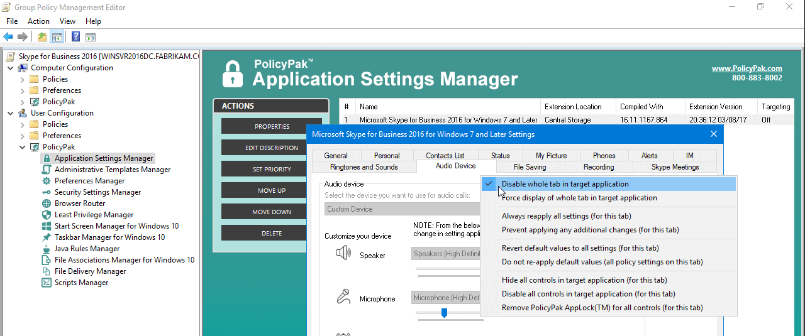

Endpoint Policy Manager for Microsoft Skype for Business (formerly Lync)
Skype for Business is awesome! And lots of organizations are using it. And, let me guess, you're using it (or are about to be) using it too.
Excellent. Well, then, you already know there's no "In the box" way to manage the Skype client using Group Policy – which is a real bummer. Your Active Directory admins already know how to use Group Policy, but too bad they can't configure the Skype client.
Except now you can, with the pre-configured Netwrix Endpoint Policy Manager (formerly PolicyPak) for Business Pak. With this pak, you'll be able to deliver lots of Skype client settings PLUS lock down areas of the Skype client that users can access. So if you want to ensure that users can't "mess up their Skype Client settings" then check out this video.
NOTE: This video shows Lync 2010, but we also have a pre-configured Paks for Lync 2013 and Skype for Business 2015/2016.
There's simply no way to manage the Lync client using Group Policy any other way. We're more than a mere ADM template. PolicyPak is a true management system, which can lock down the Lync client and ensure users cannot work around your set policies.
You can deliver key settings and lock users out of scary Lync Client settings, as seen here.

You can dictate the Inactive and Away times for the Lync Client, like what is seen here.

Or ensure your users don't mess with settings which are dictated from the Lync server by completely disabling a whole tab, like what is seen here.

Getting Lync server deployed isn't easy. And when it is deployed, make sure your users are using it the way you intended, instead of working around your settings. With PolicyPak, you can deliver lots of Lync Client settings and ensure that you're in charge and users' settings are unchangeable.
Besides, once you're using PolicyPak to manage the Lync Client, you'll also get to manage all your other enterprise desktop applications the same way:Flash, WinZip, Firefox, and any custom applications you have. They're 100% included – absolutely free.
It's all included when you're a PolicyPak Professional customer.
PolicyPak was designed by former Group Policy MVP Jeremy Moskowitz – who "wrote the book" on Group Policy, runs GPanswers.com, and lives and breathes Group Policy and enterprise software deployments and desktop lockdown.
When you're ready to get serious about managing the Lync client, PolicyPak is ready for you.
Manage Microsoft Lync client with Group Policy video transcript
Hi, this is Jeremy Moskowitz, former Group Policy MVP and Founder of PolicyPak Software. In this video, we're going to learn how to use PolicyPak to manage Microsoft Lync client.
I've already got my Microsoft Lync client here, and I'm just a regular user here. As you can see, I'm logged on as a guy called "eastsalesuser4." If I were to go to the "Tools/Options" page here, like lots of other applications that PolicyPak can control, there are just too many things for a user to mess up on their own. That's why you, the administrator, need to swoop in and help them out.
Let's start off here with "General." Maybe you don't want to "Show emoticons in instant messages" or "Show an alternating background color for messages in the conversation" or something like that. We can uncheck these checkboxes.
We can also prevent users from using an alternate "Sign-in address" if that's interesting as well. I'll show you how to do that.If we take a look down over at "Status" here, maybe you want to set a custom timer for when users are inactive or when they're away.Maybe you don't want them to mess up these "Alerts" here.
Let's go over and see how we would do that using PolicyPak. I'll go ahead and switch over to my other computer here. Here on my Management Station, as we have done in lots of other demonstrations, we're going to just go to "C:Program FilesPolicyPakExtensions" here. We're going to find our "PreConfigured PolicyPaks" folder. This is something you would download from us here at PolicyPak.
We've got a lot of preconfigured applications, more coming all the time. The one we're after right here is the "Lync" client. What we're going to do is we're going to take the "pp-Lync-Client.dll" and "Copy here" where the other extensions live. That's it. It's as simple as that. You're ready to start using the LyncPolicyPak.
We'll go ahead and right click over our "East Sales Users" here, "Create a GPO" and we're going to "Lock Down Lync client." So this GPO is now associated with the "East Sales Users." I'll right click over. I'll click "Edit…" here. I'll dive down under "User Configuration," "PolicyPak/Applications/New/Application." There it is, "PolicyPak for Microsoft Lync" along with our other applications like "Word" and "Media Player," "Firefox" and some other things.
We'll click on that here. We'll open it up, and let's get started. The first thing maybe we want to do is to uncheck those two items that are in the "General" tab. They were checked on the client. We're going to forcefully uncheck them.
We'll go to "Personal" and we'll wipe out – we can't change this, and it doesn't make sense to change it for a user. But what would be nice is that we could "Disable corresponding control in target application." The idea is that this will be grayed out so a user can't use it, which may be exactly what you want.
Let's head over to "Status." We talked about how maybe you want to have an inactive timer of "11." While we're here, we'll also right click it and also "Disable corresponding control in target application."The idea is that it's now set to "11" and a user can't work around it.
The last thing we want to do is under "Alerts," just by way of example. We can right click over the tab and "Disable whole tab in target application." So we'll go ahead and do those changes here. We'll go ahead and click "OK." These are just example changes that I want to make here.
Client machine here, we'll get a command prompt and run "gpupdate." Now again, we could envision the user just logging on for the very first time or changing job roles or getting a new computer. As soon as they do, they're going to get these settings. I just happen to be using GPUpdate to do that.
Now that that's done, we'll go ahead and rerun the "Microsoft Lync 2010" client here. OK, there we go. Now if we go to "Tools/Options" as a user, let's go ahead and check out what we can see here. There we go. So we have those two checkboxes that were checked. They're now unchecked, which is what we want.
If we go to "Personal," we can see that the setting is prebaked in, but now it's unchangeable, which is super important. If we go to "Status," we can see we've delivered that setting and it's jammed up to "11." Notice how it's unchangeable. It's grayed out. It's actually – you've really got to squint – but it's a different shade of gray than this "5" which I can manipulate if I wanted to, but I can't manipulate that "11."
This is going to be super fun. Watch what happens when I click on "Alerts." You've really got to pay attention, but watch. I click on "Alerts," and I can't actually do it. So the whole point is that tab – even though it's not really a tab – that tab is not available for users to use.
So that is it. That is how you use PolicyPak to manage the Lync client. One thing I do want to mention is that there are in fact a lot of settings in here that are manipulated on the Lync server directly. There is not a Group Policy way to do it. I'm trying to think about one that might be a good one.
Here's one. This "Alerts" guy here, you see that it doesn't change. It doesn't underline like these other ones that we manipulated earlier do. The ones that underline are ones that we were able to configure using the PolicyPak. The ones that don't underline, as you see here, are ones that are not configurable.
You could right click and "Hide corresponding control in target application" or "Disable corresponding control in target application" for those settings. Those work just fine in this Pak. But you will not be able to deliver the actual values of these settings, because they're not able to be delivered using Group Policy. Only available delivery from the Lync server itself.
I hope that makes sense and you get a lot of value out of our free, included with PolicyPak Professional, the preconfigured PolicyPak for Lync client. Thanks so much for watching, and get in touch with us if you're looking to get started.
Talk to you soon.